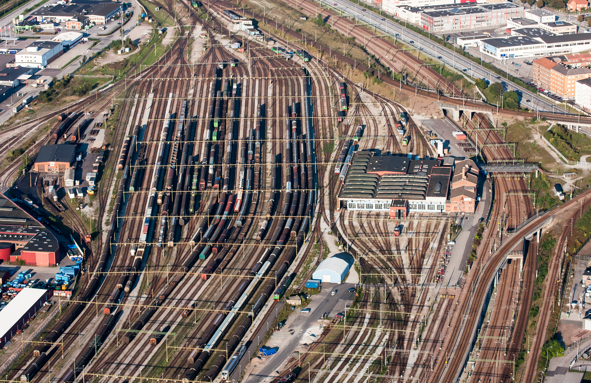

Om svenska tåg
Svenska järnvägar används av både person- och godståg för att transportera människor och varor över hela landet. Järnvägsnätet kopplar ihop många städer och orter, och större städer har ofta fler avgångar. Tågen styrs med hjälp av signaler och olika järnvägssystem som gör att trafiken kan fungera säkert och organiserat. Flera olika företag kör tåg på det svenska järnvägsnätet, medan infrastrukturen till stor del hanteras av Trafikverket.
Det finns flera olika typer av persontåg i Sverige. Långdistanståg, som SJ snabbtåg, används för att resa mellan större städer. Regionaltåg kör vanligtvis kortare sträckor och stannar vid fler stationer. Det finns också pendeltåg i större regioner som främst används av personer som reser till skola eller arbete. Exempel på svenska persontåg är X2000, Öresundståg samt olika regional- och pendeltåg.
Tåg är en viktig del av transporten i Sverige eftersom de kan transportera många människor samtidigt. De gör det möjligt att resa mellan olika städer utan att behöva använda bil, vilket kan vara särskilt praktiskt vid längre resor. Järnvägen används också för att transportera stora mängder gods över landet. Ett välutbyggt järnvägsnät gör det enklare för människor att resa till arbete, skola och fritidsaktiviteter och binder samman olika delar av Sverige.
